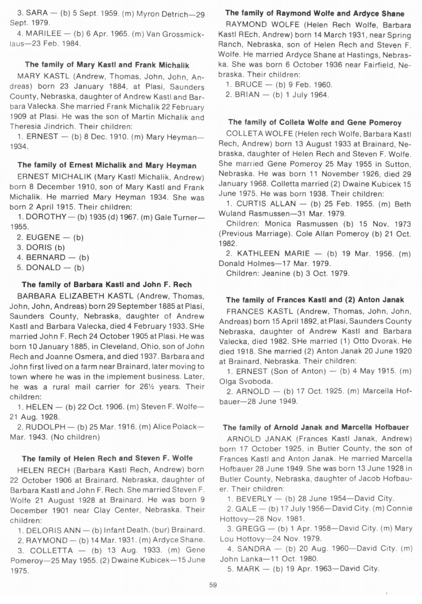

The book · The Family of Andrew Kastl
Page 59 The family of Mary Kastl and Frank Michalik


Transcription
- SARA — (b) 5 Sept. 1959. (m) Myron Detrich—29 Sept. 1979.
- MARILEE — (b) 6 Apr. 1965. (m) Van Grossmicklaus—23 Feb. 1984.
The family of Mary Kastl and Frank Michalik
MARY KASTL (Andrew, Thomas, John, John, Andreas) born 23 January 1884, at Plasi, Saunders County, Nebraska, daughter of Andrew Kastl and Barbara Valecka. She married Frank Michalik 22 February 1909 at Plasi. He was the son of Martin Michalik and Theresia Jindrich. Their children:
- ERNEST — (b) 8 Dec. 1910. (m) Mary Heyman—1934.
The family of Ernest Michalik and Mary Heyman
ERNEST MICHALIK (Mary Kastl Michalik, Andrew) born 8 December 1910, son of Mary Kastl and Frank Michalik. He married Mary Heyman 1934. She was born 2 April 1915. Their children:
- DOROTHY — (b) 1935 (d) 1967. (m) Gale Turner—1955.
- EUGENE — (b)
- DORIS (b)
- BERNARD — (b)
- DONALD — (b)
The family of Barbara Kastl and John F. Rech
BARBARA ELIZABETH KASTL (Andrew, Thomas, John, John, Andreas) born 29 September 1885 at Plasi, Saunders County, Nebraska, daughter of Andrew Kastl and Barbara Valecka, died 4 February 1933. SHe married John F. Rech 24 October 1905 at Plasi. He was born 10 January 1885, in Cleveland, Ohio, son of John Rech and Joanne Osmera, and died 1937. Barbara and John first lived on a farm near Brainard, later moving to town where he was in the implement business. Later, he was a rural mail carrier for 26½ years. Their children:
- HELEN — (b) 22 Oct. 1906. (m) Steven F. Wolfe—21 Aug. 1928.
- RUDOLPH — (b) 25 Mar. 1916. (m) Alice Polack—Mar. 1943. (No children)
The family of Helen Rech and Steven F. Wolfe
HELEN RECH (Barbara Kastl Rech, Andrew) born 22 October 1906 at Brainard, Nebraska, daughter of Barbara Kastl and John F. Rech. She married Steven F. Wolfe 21 August 1928 at Brainard. He was born 9 December 1901 near Clay Center, Nebraska. Their children:
- DELORIS ANN — (b) Infant Death. (bur) Brainard.
- RAYMOND — (b) 14 Mar. 1931. (m) Ardyce Shane.
- COLLETTA — (b) 13 Aug. 1933. (m) Gene Pomeroy—25 May 1955. (2) Dwaine Kubicek—15 June 1975.
The family of Raymond Wolfe and Ardyce Shane
RAYMOND WOLFE (Helen Rech Wolfe, Barbara Kastl REch, Andrew) born 14 March 1931, near Spring Ranch, Nebraska, son of Helen Rech and Steven F. Wolfe. He married Ardyce Shane at Hastings, Nebraska. She was born 6 October 1936 near Fairfield, Nebraska. Their children:
- BRUCE — (b) 9 Feb. 1960.
- BRIAN — (b) 1 July 1964.
The family of Colleta Wolfe and Gene Pomeroy
COLLETA WOLFE (Helen rech Wolfe, Barbara Kastl Rech, Andrew) born 13 August 1933 at Brainard, Nebraska, daughter of Helen Rech and Steven F. Wolfe. She married Gene Pomeroy 25 May 1955 in Sutton, Nebraska. He was born 11 November 1926, died 29 January 1968. Colletta married (2) Dwaine Kubicek 15 June 1975. He was born 1938. Their children:
- CURTIS ALLAN — (b) 25 Feb. 1955. (m) Beth Wuland Rasmussen—31 Mar. 1979. Children: Monica Rasmussen (b) 15 Nov. 1973 (Previous Marriage). Cole Allan Pomeroy (b) 21 Oct. 1982.
- KATHLEEN MARIE — (b) 19 Mar. 1956. (m) Donald Holmes—17 Mar. 1979. Children: Jeanine (b) 3 Oct. 1979.
The family of Frances Kastl and (2) Anton Janak
FRANCES KASTL (Andrew, Thomas, John, John, Andreas) born 15 April 1892, at Plasi, Saunders County Nebraska, daughter of Andrew Kastl and Barbara Valecka, died 1982. SHe married (1) Otto Dvorak. He died 1918. She married (2) Anton Janak 20 June 1920 at Brainard, Nebraska. Their children:
- ERNEST (Son of Anton) — (b) 4 May 1915. (m) Olga Svoboda.
- ARNOLD — (b) 17 Oct. 1925. (m) Marcella Hofbauer—28 June 1949.
The family of Arnold Janak and Marcella Hofbauer
ARNOLD JANAK (Frances Kastl Janak, Andrew) born 17 October 1925, in Butler County, the son of Frances Kastl and Anton Janak. He married Marcella Hofbauer 28 June 1949. She was born 13 June 1928 in Butler County, Nebraska, daughter of Jacob Hofbauer. Their children:
- BEVERLY — (b) 28 June 1954—David City.
- GALE — (b) 17 July 1956—David City. (m) Connie Hottovy—28 Nov. 1981.
- GREGG — (b) 1 Apr. 1958—David City. (m) Mary Lou Hottovy—24 Nov. 1979.
- SANDRA — (b) 20 Aug. 1960—David City. (m) John Lanka—11 Oct. 1980.
- MARK — (b) 19 Apr. 1963—David City.
Transcriber’s notes
Page opens mid child list (items 3-4) continuing from the previous page (children of Louis Vrbka and Anna Speicher, p.58). Print typos kept as printed: 'Kastl REch', 'Helen rech Wolfe', 'SHe'; heading spells 'Colleta' while text/list also use 'Colletta'. Michalik children 2-5 have '(b)' with no date. Small speck over the 'v' of the last 'David City'.